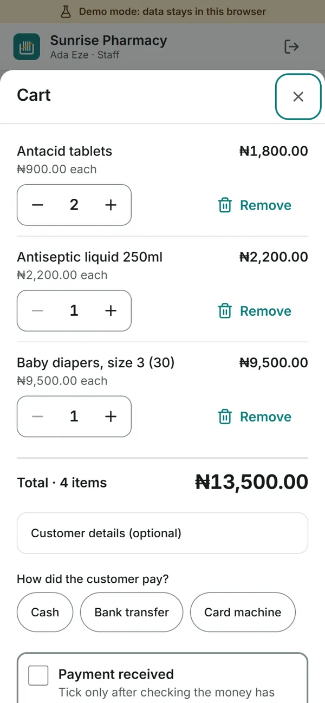
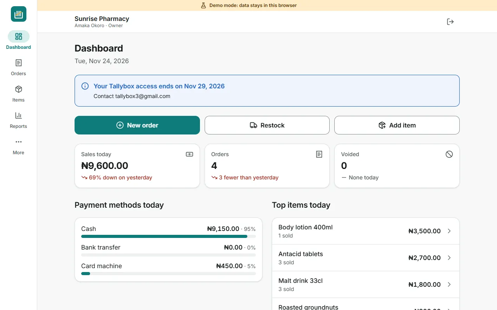
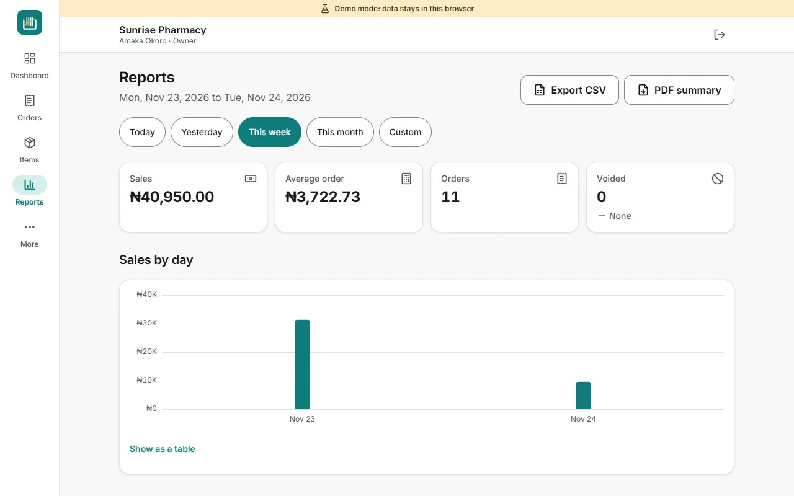
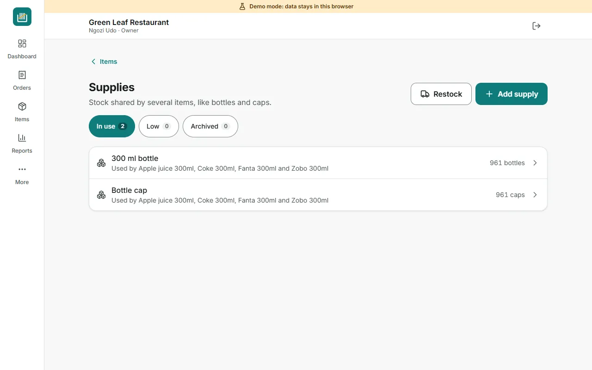

Business software: inventory and sales
Tallybox
Inventory and sales for small and large businesses, from shops and pharmacies to restaurants, opened from a link on the phones they already have. Every sale takes stock off automatically, and an order only counts once staff tick that payment was received.
- Role
- Designer and developer
- Built
- November 2026, 97 commits
- Status
- Live, version 0.1.0
- Stack
- React, TypeScript, Supabase, Cloudflare
The problem
Businesses that sell over the counter work fast, take cash and bank transfers, and need staff to be quick. Without a record of every sale it is hard to know what is on the shelf, what sold and whether the day's money matches.
Objectives
- Record every sale and take it off stock automatically.
- Count only paid orders, so totals match the money.
- Run from a link: no app store and no installs, on phones, tablets and laptops.
- Keep each business's data separate and every change traceable.
My role
I designed and built Tallybox on my own: the React front end, the Postgres schema and database functions, the Edge Functions, the tests and the deployment.
Main features
Fast selling
Tap items, adjust quantities, take the payment. Search and categories find anything in seconds.
Only paid orders count
An order is confirmed only after staff tick "Payment received". Waiting for a transfer? Hold the order; no stock is taken until it is paid.
Stock that counts itself
Sales take stock off and deliveries add it back, with warnings before items run out.
Shared supplies
Link items to stock they share, like bottles and caps. Every sale takes its share automatically.
Reports
Today against yesterday, payment methods, best and slowest sellers, stock value at cost, any date range, a CSV export and a one-page PDF.
Staff accounts with limits
Staff take orders. Only owners see totals, cost prices, reports and settings.
Receipts
As a picture or PDF, shared or printed from the browser.
Business access
Businesses register with a single-use activation code. A developer area manages businesses and access periods.
How it's built
Open any part for the detail.
Front end
React and TypeScript with Vite, Tailwind CSS, TanStack Query, React Hook Form and Zod. An installable web app whose service worker caches only the app shell, never business data.
One data interface
Screens talk to a single TallyboxApi with two versions: demo data kept in the browser, and Supabase. Business rules are pure functions shared by both.
Database
Supabase Postgres with Row Level Security. The browser never writes to tables: every change goes through a database function or an Edge Function (Deno) that checks who is asking. Ten migrations and ten Edge Functions.
Security
The browser only gets the publishable key, and the app refuses to start with a secret key in its place. Cloudflare Turnstile protects sign-in and registration and is checked on the server. A Content Security Policy is set in headers, and personal data is removed from logs.
Testing and CI
Unit and component tests (Vitest and Testing Library), database tests (pgTAP), Edge Function tests (Deno), and Playwright end-to-end tests on Pixel 7, desktop Chrome, Firefox and iPhone 14, with automated accessibility checks (axe). CI runs on every push to main and every pull request; a weekly job takes an AES-256-encrypted production backup.
Hosting
Cloudflare Pages builds every push to main and serves the app at tallybox.pages.dev.
Technologies
- React
- TypeScript
- Vite
- Tailwind CSS
- TanStack Query
- Zod
- Supabase
- PostgreSQL
- Deno
- Vitest
- Playwright
- pgTAP
- Cloudflare
- GitHub Actions
Interface walkthrough
Screens from Tallybox's built-in demo mode, which uses made-up businesses and people.
-

Staff tap items into an order. -

The order is confirmed only after "Payment received" is ticked. -

The owner sees the day at a glance. -

Reports for any range, with a CSV export and PDF summary. -

Shared supplies: one bottle stock used by four drinks.


Challenges and solutions
Totals that match the money
Orders are confirmed only after staff tick "Payment received", and held orders take no stock until they are paid. The day's totals only include money someone has checked.
Keeping businesses apart and records honest
Row Level Security keeps each business to its own data, and every change runs through a server-checked function. Sales, voids and stock changes are kept for good, with who made each one.
Updating an app people install
The service worker caches only the app shell. The app checks for a new version on start, when the tab regains focus, when the network returns and every 30 minutes, then offers a refresh; raising a minimum version forces old copies to update.
A build tool blocked by Windows
Windows Smart App Control blocked a freshly released copy of Tailwind's native scanner, which left pages unstyled. I pinned Tailwind to an exact version and documented the fix.
Outcome and status
Live at tallybox.pages.dev (version 0.1.0), with the code public on GitHub. Businesses register with a single-use activation code.